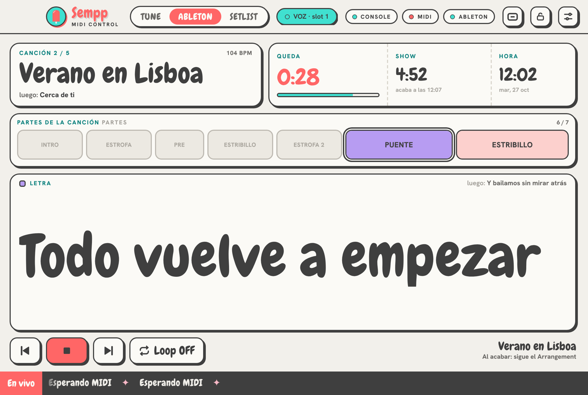
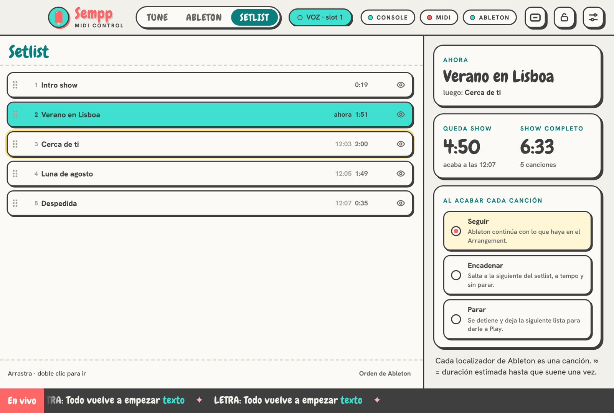
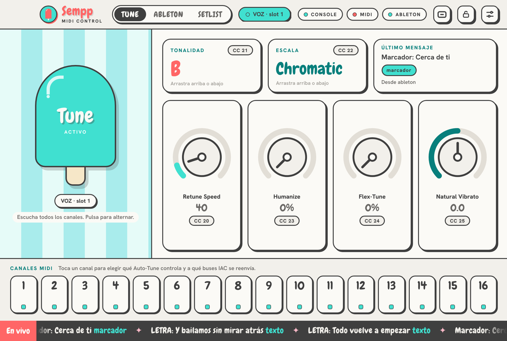
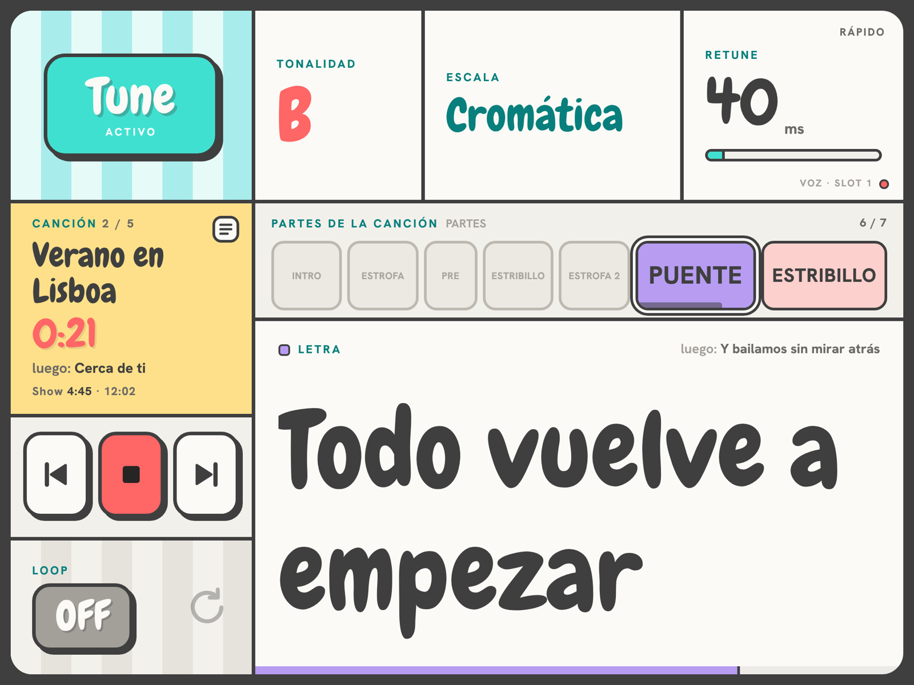
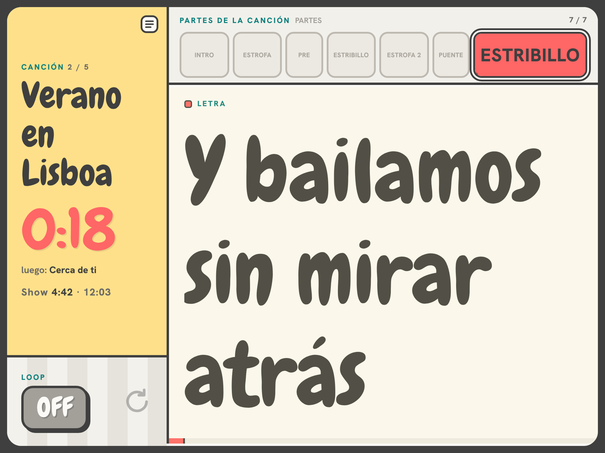

SEMPP MIDI CONTROL maneja el Auto-Tune de tu Apollo clip a clip y le enseña a toda la banda qué canción suena, qué parte viene y cuánto queda.
macOS 10.15 o posterior · Intel y Apple Silicon · Ableton Live 11 y 12 · UAD Console

Pensado para que el show no dependa de nadie mirando el portátil.
Tonalidad, escala, retune y bypass por MIDI, clip a clip. Varios Auto-Tune a la vez, uno por canal.
Cada localizador es una canción. Reordena arrastrando, quita canciones del show y elige si al acabar sigue, encadena a tempo o para.
Cuenta atrás de la canción, lo que queda de show y a qué hora acaba. Las duraciones se ajustan solas al tempo real.
Vistas para director, técnico y banda por la red del rack, sin internet. Escaneas un código y listo.
Toca una parte de la canción y entra en el siguiente compás, respetando la cuantización de Ableton.
Controles táctiles con confirmación o bloqueados, ventana flotante siempre visible, actualizaciones verificadas e informe de errores en un clic.




Abre el .dmg y pulsa Instalar. El asistente de inicio comprueba en directo Console, Auto-Tune, Ableton y el iPad.
Un localizador por canción y una pista con las partes. SEMPP lo lee solo del Arrangement.
Ordena el setlist, reparte los códigos a la banda y sal al escenario.